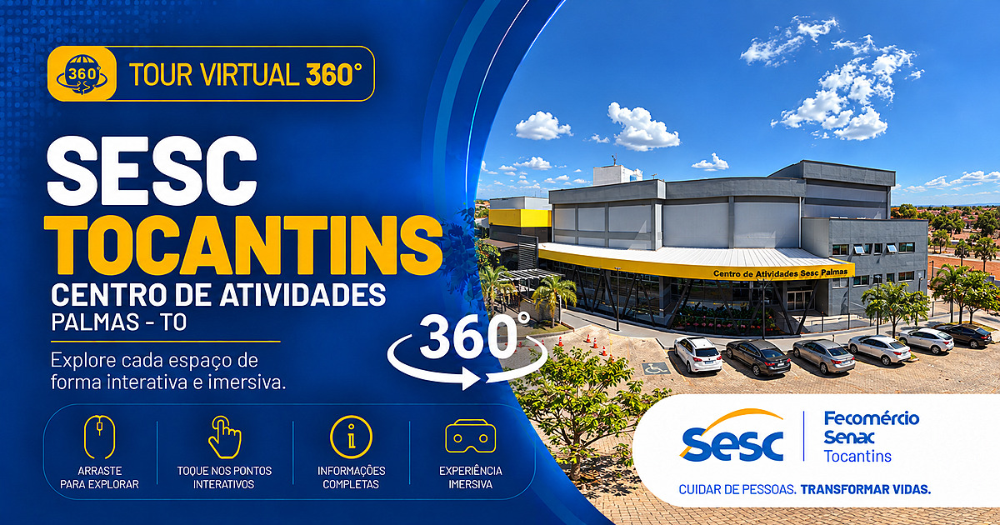

SESC TOCANTINS · VISITA VIRTUAL
Um novo olhar.
Muitos caminhos.
O Sesc está perto de você.
Agora, também a um clique.
Explore os espaços, descubra cada unidade e escolha por onde começar sua visita em 360°.
Escolha sua unidade09 unidades para explorar05 cidades do Tocantins

360° VISITA VIRTUALCOMECE SUA EXPERIÊNCIA
Centro de Atividades Palmas
ESCOLHA SEU PRÓXIMO DESTINO
Nossas unidades.
A sua próxima descoberta.
Clique em uma unidade para entrar no tour.
Ao terminar, feche a janela e continue explorando.
Não foi possível carregar as unidades. Atualize a página para tentar novamente.
PERTO DE VOCÊ, EM TODO CAMINHO
Encontre o Sesc
no Tocantins.
Arraste o mapa e amplie para ver as unidades.
Toque em um marcador para conhecer o local.
O mapa está indisponível. Você pode escolher uma unidade na lista ao lado.
CONTINUE ESSA CONEXÃO
Cuidar das pessoas
é a nossa essência.
Acompanhe o Sesc Tocantins e faça parte dessa história.